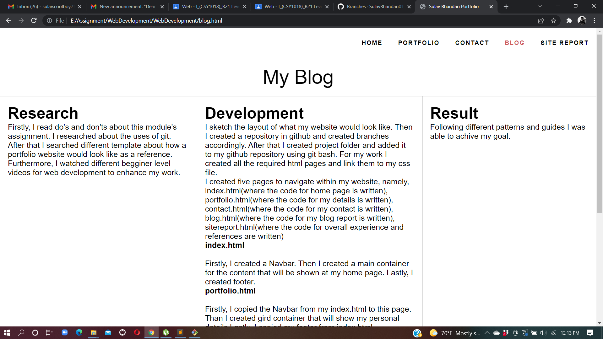
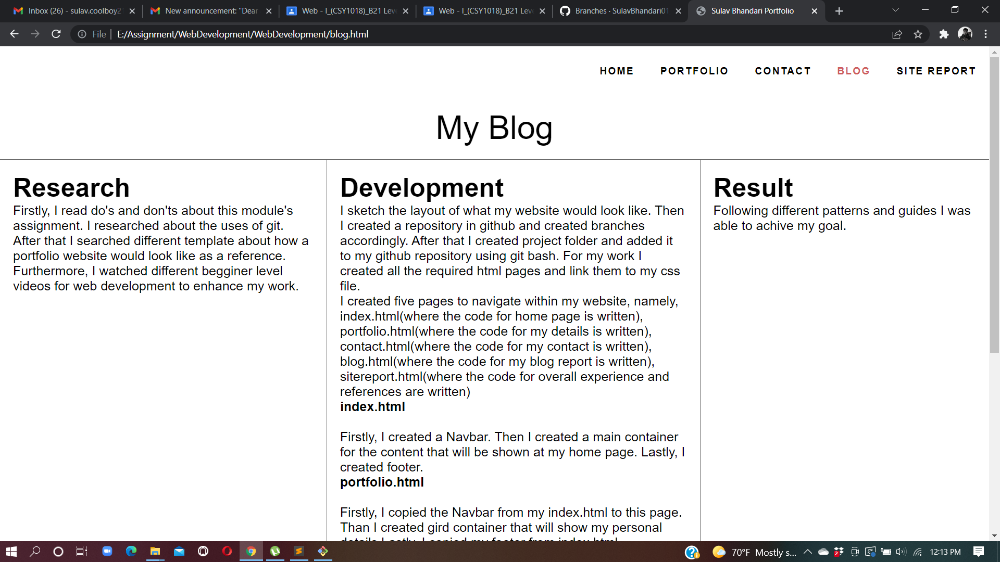
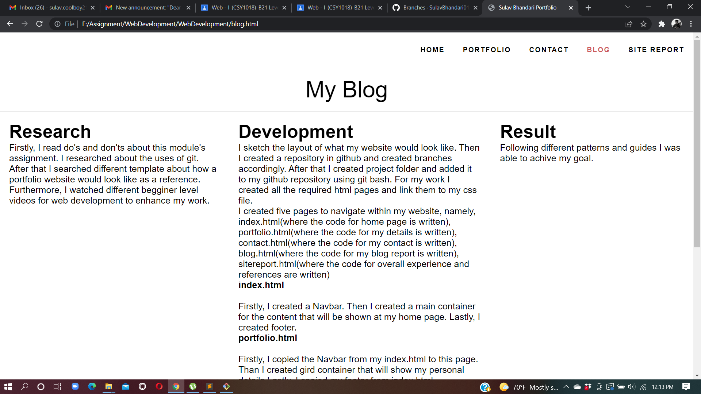

Firstly, I was finding trouble in doing this assignment. I checked out several reference about the layout for my website. When I found the suitable reference I began coding. I found difficult to start my work. I checked out some videos regarding this assignment. I learned how to use git properly. I created repository in my github account. I created seperate branches from master. After that I started my coding in sublime text. I took some help from W3school regarding coding. I linked my coding to CSS where I started to desing my content look good. I found quite difficult to use CSS at first. I choose my color from color maker. I used google font to make my text look nice. At first I used a logo in my home pages and removed it in my process. I tried different text fonts, color before I found a matching one. I had to change my content time and again in the process. While creating my portfolio I thought about my achievement and I quoted it there. While I made my contact page I was getting used to codding and using CSS so I found that portion easy. I wrote my blog in where I quoted my research, development & result thoroughly. While writing my blog report I had to recall my research & reference which I have written there. Though I found difficult to start my assignment, with time & research I get used to coding & designing. With several ups & down I came up with my final result. I found this module quite intresting. I came to learn a lot about web developing.

W3schools.com. 2022. W3Schools Free Online Web Tutorials. [online] Available at:
Google Fonts. 2022. Google Fonts. [online] Available at:
Youtube.com. 2022. [online] Available at:
Colorhunt.co. 2022. Color Palettes for Designers and Artists - Color Hunt. [online] Available at:
Youtube.com. 2022. [online] Available at: